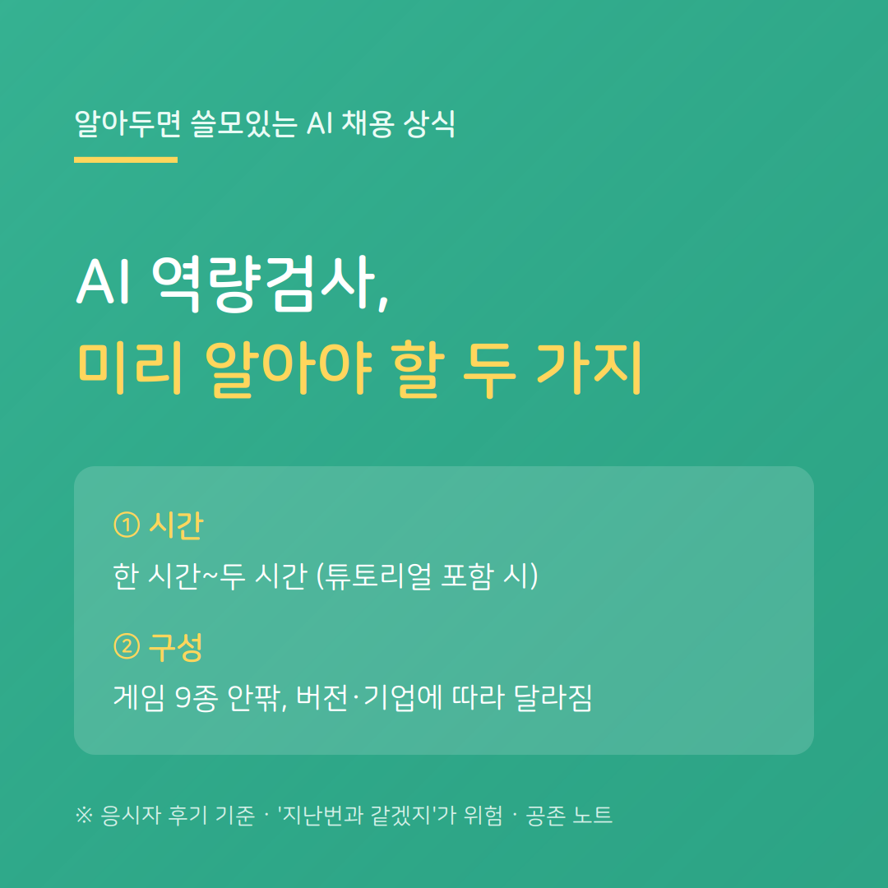

AI 역량검사를 처음 보는 사람들이 공통으로 놀라는 게 있습니다. "생각보다 오래 걸린다"는 점, 그리고 "듣던 것과 게임이 다르다"는 점입니다.
먼저 시간. 실제 소요 시간은 대체로 한 시간 안팎입니다. 여기에 게임마다 붙는 튜토리얼(연습)까지 꼼꼼히 하면, 두 시간을 넘겼다는 경험담도 있습니다. 가볍게 시작했다가 끝날 때쯤 진이 빠졌다는 후기가 흔합니다. (응시자 후기 기준)
왜 이렇게 길까요. 한 가지만 보는 게 아니기 때문입니다. 보통 자기소개, 성향 파악, 전략 게임, 영상 면접이 순서대로 이어집니다. 게임 하나하나에 설명과 연습이 붙고, 성향 검사는 같은 걸 여러 방식으로 되물어 문항이 많습니다.
더 주의할 점은, 게임 구성이 고정이 아니라는 것입니다. 후기를 보면 게임이 9종이었다는 사람도, 11종쯤이었다는 사람도 있습니다. '구 버전'과 '신 버전'의 게임 종류가 다르고, 기업에 따라 구성도 달라집니다. 실제로 한 응시자는 신 버전에 익숙해진 뒤 구 버전을 보는 기업에서 당황해 낭패를 봤다고 합니다.
그래서 '지난번과 같겠지' 하는 방심이 가장 위험합니다. 미리 넉넉한 시간을 잡고, 방해받지 않는 시간대에, 튜토리얼을 건너뛰지 않고, 이번 검사가 어떤 버전인지 처음에 확인하며 시작하는 것이 안전합니다.
공존 노트는, 얼마나 걸리는지, 무엇이 나올지조차 모르고 시작하는 것과 알고 대비하는 것은 결과가 다르다고 봅니다.
---
※ 소요 시간·게임 구성은 기업·솔루션·버전·시기에 따라 다를 수 있습니다.
공존 노트 · AI가 당신을 평가하는 시대, 구직자를 위한 안내서